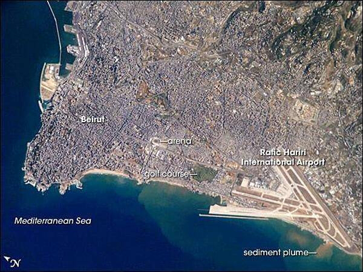

In , the French demarcated the region of Lebanon. On of that year, the region officially achieved independence becoming the Lebanese Republic. However, from to , the country underwent a civil war followed by years of social, political, and economic instability. Prior to the Lebanese Civil War, the country enjoyed a more diveresified economy fueled by tourism, agriculture, and commerce.
Physically, Lebanon is about one-third the size of the state of Maryland, making it the smallest country in continental Asia and one of the smallest countries in the world. Located in the Middle East, Lebanon borders the Mediterranean Sea between Israel and Syria. Syria has historically been an influence on Lebanon’s foreign and domestic policies with its military occupying the nation for almost 30 years.
Lebanon's borders with Israel and Syria still remain unresolved. You can learn more about Lebanon's politcal history, background, and current climate here.
The capital of Lebanon is Beirut, a small peninsula whose city is bounded eastwards by the mountainous interior of the country. For over 5,000 years, Beirut has been an urban center and a focus of military and economic conflicts with its neighboring city-states.

Aerial view of Lebanon with a focus on the capital city of Beirut
Geography
Location
Being located near the Mediterranean, Lebanon experiences mild to cool, wet winters with hot, dry summers. However, Lebanon also has mountain ranges that are known for heavy, winter snowstorms. Lebanon also can undergo natural hazards such as earthquakes, sandstorms, and dust storms.
As for its terrain, Lebanon is home to a narrow coastal plain and El Beqaa (Bekaa Valley) which separates Lebanon and Anti-Lebanon Mountains. Lebanon's highest point of elevation is Qornet es Saouda at 3,088 m, and its lowest being the Mediterranean Sea at 0m.
Land Boundaries
Land Boundaries
Distance (km)
Coastlines
225
Territorial Seas
12 nm
Total
484
Current Environmental Issues:
Deforestation
Soil Deterioration, Erosion
Species Loss
Air Pollution: Specifically in Beirut as a result of vehicular traffic
Pollution of coastal waters from raw sewage and oil spills
Waste-water Management
People & Society
Population
As of , Lebanon's population stands at 5,261,372. The majority of the people live on or near the Mediterranean coast, and of these most live in and around the capital, Beirut. While Arabic is the country's official langauge, French, English, and Armenian can also be heard spoken in Lebanon.
Ethnic Groups of Lebanon
Arab ~ 95%
Armenian ~ 4%
Other ~ 1%
Age Structure of Lebanon's Population:
Age (years)
Percentage
0-14
20.75
15-24
14.98
25-54
46.69
65 and over
7.96
Government
Overview
The Lebanese Republic is a parliamentary republic, which means the government operates under a parliamentary system of government with an Executive, Legislative, and Judicial branch. Unlike the United States, you do not obtain Lebanese citizenship automatically by birth. In order to obtain citizenship via birth it is required that your father is a citizen of Lebanon.
Breakdown of Executive Branch:
Poistion
Name
Chief of State
President Michel AWN
Head of Gov
Prime Minister Hassan DIAB
Cabinet
chosen by Prime Minister
Discover more about the Lebanese Government, its history, along with work and services here.
Elections/Appointments
The chief of state (president) is indirectly elected by the Lebanese National Assembly. The election requires two-thirds majority vote in the first round. If needed, absolute majority vote is required for a second-round voting on a 6-year term.
The last election was held on with the next election to be held sometime in . Once elected, the president then appoints a Prime Minister in consultation with the National Assembly. The Prime Minister is then responsible for choosing a cabinet in consultation with the president and National Assembly. A deputy prime minister is chosen during the formation of the cabinet.